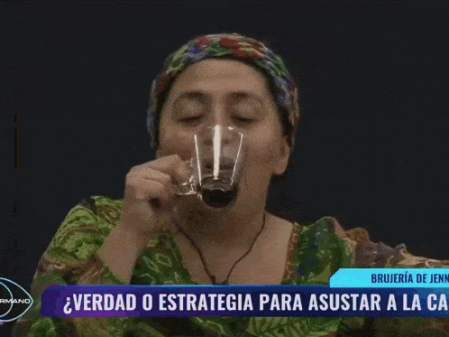

Durante muchos años las competencias físicas por equipos y fuertes cara a cara como método de nominación dominaron la pantalla criolla. Luego de una debacle del formato en 2019, el 2023 sería el escenario para la vuelta en gloria y majestad de los Realities. Gran Hermano sería el encargado. En este habría múltiples participantes que podrían ganarse el amor de los televidentes, convirtiéndose en la estrella.
Gran Hermano, un formato probado en distintos países que había logrado un rotundo éxito a lo largo del globo llegaba a mediados de junio a las pantallas de Chilevisión. La ausencia de la competencia física y la promesa de una cobertura en vivo las 24 horas del día lo hacían generar similitudes con el reality a “Protagonistas de la Fama”, de formato parecido.
Meses más tarde Canal 13 anunciaba la llegada de “Un verdadero reality”, Tierra Brava debutaba con la promesa de volver a las competencias por equipo, contando con personajes conocidos en el mundo del espectáculo, mezclados con nuevos influencers. La idea de tener a algunos de los rostros de realities más queridos, lo presentaban como el programa ideal. Finalmente, los dos formatos se enfrentan cada día por el rating. Cada uno a su estilo ha logrado llegar a los hogares de los chilenos. Demostrando que no hay un tipo de formato que los vuelva más popular. Pero... ¿Qué tienen en común ambos programas? Lo que llamamos “personajes estrellas”, los que hacen que los televidentes vean el programa.
En varias ocasiones los personajes estrellas debieron ser salvados por el público debido a que la convivencia con otros participantes del reality no era la mejor. En algunas ocasiones porque sus personalidades extremas o complicadas lo dificultaban. La afinidad que las personas llegan a sentir con el personaje hace que incluso gasten una cantidad de plata considerable para salvarlos. En este gráfico se demuestra que los participantes con personalidades más polarizadas eran mayormente los más queridos. Esto se demuestra por el apoyo incondicional que reciben de sus televidentes. Aquí podemos ver un gráfico que muestra quienes eran, y que en su mayoría son recordados por su intensidad.